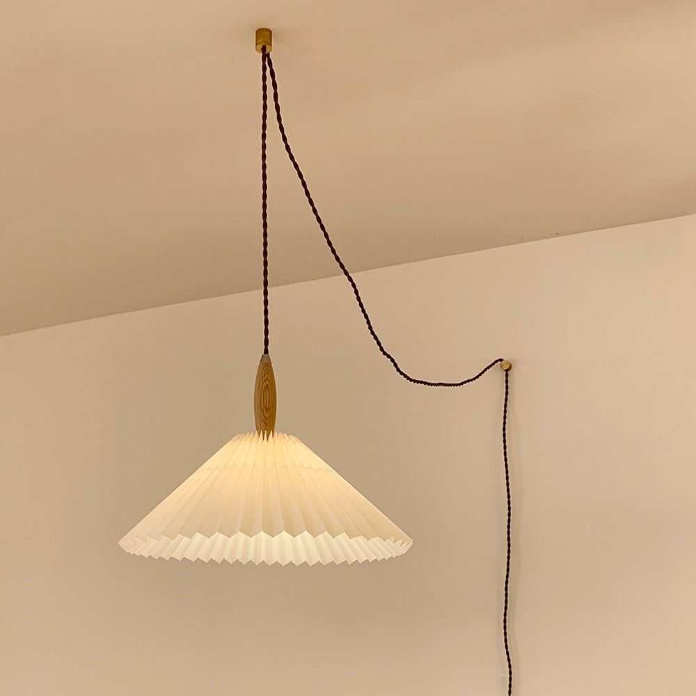

사진 크게 보기 ↗코램프 1117 플리츠 40cm · 플러그형
단품 · 상품명에 8W LED 노란빛 1개 표기
198,000원
무료배송 · 합계 198,000원
★ 4.7 · 리뷰 26개 상품 내 옵션 통합 기준
현재 D안 분위기를 유지하는 기준안. 200cm 식탁 가운데 1개를 쓰기에는 22cm 카라보다 갓의 존재감이 적절하며, 작은 우드 부품이 식탁과 연결됩니다.
- 크기
- 갓 Ø40 × H27cm · 전선 4m
- 소재
- 패브릭 갓, 오크 원목, 스틸 · 실버 헤어라인 마감
- 설치·전원
- 콘센트 플러그형 · 코드 스위치(플러그에서 80cm) · E26 1구. 스마트플러그 재전원 점등은 실증하지 않았습니다.
고르기 전에 볼 점
전기 직결 공사는 필요 없지만 천장·벽 고정홀더 2개는 나사 고정입니다. 임대인 허용과 벽재 확인이 필요합니다. 조리할 때는 기존 천장등도 함께 켜고, 패브릭 갓에 기름이 묻지 않게 해야 합니다. 상품명에는 8W 전구가 포함된 것으로 표기되지만 구매창에 전구 추가상품도 있어 중복 주문을 피하고 기본 동봉 구성을 확인하세요.
사진: 기존 D안과 같은 40cm 플리츠 실물 상품 사진